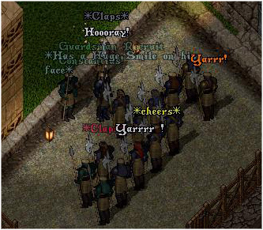

<TABLE BORDER CELLPADDING="0" background="bocimages/scrollbgdark.gif" width="100%">
	<TR>
	<!-- Header or whatever -->
	<BR>
		<TD valign="top" class="notes">
		The Covian Army follows the principle of hard
	      work, great reward. At each level of the Company, soldiers must ensure
	      that they keep ontop of their day to day duties, and that their ongoing training
	      is maintained. Below lies an up to date requirements list of each rank.
	      <DIV align="center">
		<BR>
		<I><SMALL>Recruit Constantius is promoted to Watchman!</SMALL></I>
	      </DIV>
	      <P>
	      <B>Mercenary Recruit</B><BR>
	      In order to receive the promotion to Mercenary, ye must have:<BR>
		* Been active at this rank for one month.<br>
	      * Completed four written reports.<BR>
	      * Placed twenty recruitment banners.<BR>
	      * Raised 15,000 gold for The Company.<BR>
	      * Completed two command tasks.<BR>
	      * Completed two board tasks.<BR>
	      * Completed the Recruit Trial.
	      <P>
	      <B>Mercenary</B><BR>
	      In order to receive the promotion to Veteran Mercenary, and claim the coveted Stape Belt, ye must have:<BR>
	      * Been active at this rank for three months.<BR>
	      * Completed ten written reports.<BR>
	      * Placed sixty recruitment banners.<BR>
	      * Raised 50,000 gold for The Company.<BR>
	      * Completed five command tasks.<BR>
	      * Completed ten board tasks.<BR>
	      * Completed the Mercenary Trial.
	      <P>
	      <B>Veteran Mercenary</B><BR>
	      In order to receive the promotion from Veteran Mercenary, ye must have:<BR>
	      * Been active at this rank for six months.<BR>
	      * Completed twenty written reports.<BR>
	      * Placed 120 recruitment banners.<BR>
	      * Raised 120,000 gold for The Company.<BR>
	      * Completed ten command tasks. <BR>
	      * Completed twenty board tasks.<BR>
	      * Completed Veteran Trial.
	      <P>
	      For Cove!<BR>
	      <I>Commander Raiden Morana, <BR>
	      Covian Army &amp; Baronship Council</I><BR>
	      Updated: 07/04/09<BR>
		</TD>
	</TR>
</TABLE>
